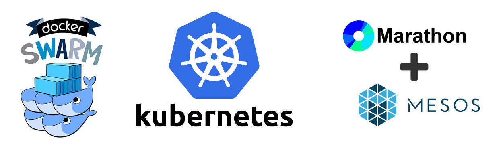
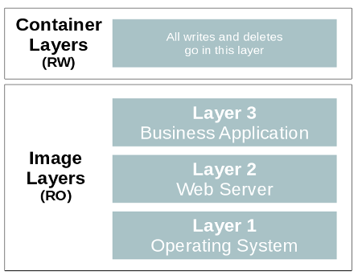

Container Overview
December 8th , 2016
By Didier BERNAUDEAU
- Cette présentation est un aperçu très rapide des Container (principale sous linux)
- C’est une technologie est déjà adoptée par de nombreuses sociétés (Google, Netflix, Amazon, …)
- ou, pour les retardataires, un projet de transformation IT est en cours pour l’adopter.
Keyboard Shortcuts
Full Screen F
Next Slide Space bar
Slide Notes S
Thumbnail View Esc
View online at http://0xdbe.github.io/ContainerOverview_20161208
- Cette présentation est disponible sur github
- Vous pourrez donc la voir et la revoir
- Pour ceux qui ne seraient pas familiarisés avec Reveal JS, voici les principaux raccourcis clavier
What is a container?
Lightweight VM
Chroot on steroids
- Il y a deux approches.
- Un container, c’est comme une machine virutelle allégée.
- Mais un container c’est qu’un chroot amélioré…
How does it work?
- Mais concrètement, comment cela fonctionne ?
Kernel features for Container
Control Groups (Cgroups) is a kernel feature to limit and account the resource usage for a set of processes.
Name Spaces is a kernel feature to isolate and virtualize system resources of a collection of processes.
seccomp (Secure Computing) is a kernel feature intruduce by Google to filter syscalls issued by a program.
- Il y a tout d’abord des fonctionnalités au niveau du noyau linux.
- Control Groups: Elle permet de limiter l’utilisation du matériel (comme la mémoire) et d’en mesurer la consommation réelle.
- NameSpace est une fonctionnalité qui permet de donner une « vue » limitée du système à un processus. (Example avec UID)
Une autre fonctionnalité importante est le Secure Computing (Firewall permettant de filtrer les appels systeme pour un processus.)
Container Runtime
Run processes in isolated environments (Container)
Providing APIs and tooling that abstract kernel features
- Le Container Runtime est une application qui permet d’éxécuter des processus dans un environnement isolé que nous appelerons « Container ».
- Il y a un inconvénient, un Container Runtime fonctionne sur un seul host. Inacceptable en entreprise !!
Container Cluster Manager
Allow multi-host container runtime
Provide high availability and auto scaling

- C’est ainsi que sont apparu les container cluster manager.
- Ils offrent une solution pour la haute disponibilité et l’auto scalling.
- Noeud : swarm & kubernete
- Cluster: Mesos
Container Image
Image references a list of read-only layers

Copy-on-write strategy allows to optimize resources
Business data is never store in the container image (cf. Flocker)
Une image est composée de différentes couches accessibles en lecture seule par le container
Le concept « copy on write » permet de partager les images entre plusieurs container.
Security Challenge
Secure Container
Container hardening (AppArmor / SeLinux, ...)
Container encryption
Secure Container hosts
Plateform hardening (Seccomp BPF, ...)
Prevent container evasion
Secure container management tools
Two-factor authentication
Least privilege
Sources
Web sites
Articles
Slides
Video
Audio
NameSpaces
PID Isolate the process ID number space (PID1000 = PID1)
IPC isolate certain interprocess communication
Mount isolate the set of filesystem mount points seen by a group of processes
Network each network namespace has its own network devices, IP addresses, IP routing tables, ...
UTS allows each container to have its own hostname
User allow a process to have root privileges inside the container, while at the same time being a normal unprivileged process on the system (UID 1000 = UID0)